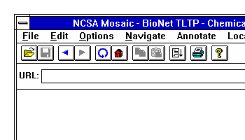
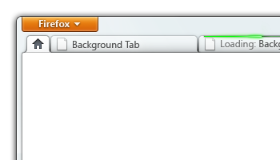

Test Case Index:
- Menu Item Usage Study — Scheduled to begin Feb.2nd, 2010.
- A Week in the Life of a Browser — Periodical Study. Scheduled to begin Dec.2009 and end Dec.2010. The first round of analysis and data samples are avaiable.
- Accounts and Passwords Study — Completed by Jan.2010. See analysis and data samples.
- Tab Open/Close Study — Completed by Sep.2009. See analysis and data samples.
Menu Item Usage study
- Analysis of data
- Aggregated data samples for download
Introduction
Ever since Mosaic 1.0 Web browsers have had a menu bar.
However, this menu bar has always illogically followed the design of a standard desktop publishing application, containing top level commands like File and Edit, even though these commands are not always directly applicable to the primary functionality of a Web browser,which is generally not limited to document creation and editing. To streamline the Firefox user interface, and to match the overall interactive design of Windows 7, the Firefox UX team is exploring collapsing the menu bar into a single "application button" when Firefox is running on modern versions of Windows.
This change will help simplify Firefox, both visually and interactively, and will also leverage external consistency with other applications that the user regularly uses alongside Firefox. However, we currently haven't decided on the exact contents of the menu that the application button will display to the user.
To transition users from a traditional menu bar to an application button, and create a fully optimized design, we would like to have a better understanding of how Firefox's current traditional menu bar is commonly used. The aggregated data you provide by participating in this study will directly help to inform your next version of Firefox. While in the future users will still have the option of returning to the traditional menu bar, we want to create a design that users prefer.
This test is not localized to any other languages yet. If you have any questions for this test or are interested to help us improve test metrics, please join us in the Test Pilot discussion group.
Test Detail
Data Questions:
- Which menu items are the most commonly used?
- Which menu items are the least commonly used?
- How long do users spend exploring the menu bar contents before selecting each particular menu item? (collecting this data now will aid us in later determining if the new design makes users more efficient and effective)
Main Data Type:
- Access count
- Exploration time
In order to understand how the current menu bar in Firefox is used, we will be recording how often users interact with each menu entry, and the time they spent exploring the contents of the menu bar prior to making a particular selection. Each menu entry will be assigned a score representing how many times it was used during the duration of the study, and the average time the user spent exploring the menu bar prior to selecting it. This data will then be aggregated across all users participating in the study.